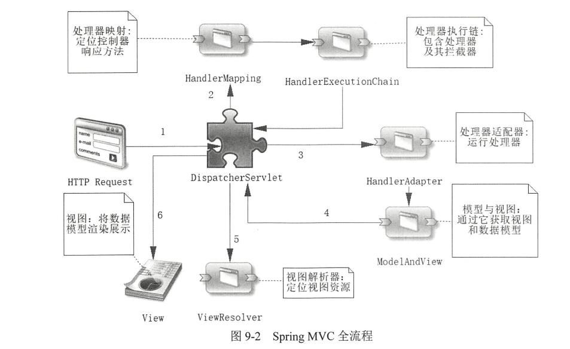
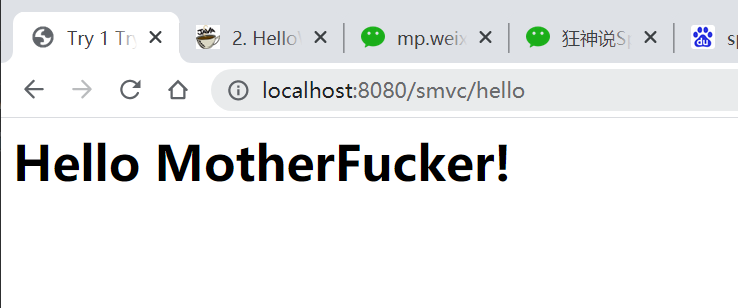

MVC 全流程

- 通过
@RequestMapping注解，将控制器(Controller) 扫描进HandleMapping DispatcherServlet接收HTTP请求，通过HandleMapping寻找控制器，HandleMapping返回HandlerExecutionChain对象HandlerExecutionChain中包括日志、处理器、拦截器等
- 通过
HandlerAdapter接口定义的实现类(常用HttpRequestHandlerAdapter) 执行HandlerExecutionChain中的处理器对象 - 处理器对象通过业务层，DAO层等获取数据，放入模型并返回模型和视图对象（
ModelAndView），比如常用的Controller->Service->Repository->Mysql ViewResolver解析视图地址，最后视图被渲染出来
创建一个简单的Spring MVC应用
-
先用maven，创建一个web项目，添加依赖：
<dependencies> <dependency> <groupId>org.springframework</groupId> <artifactId>spring-webmvc</artifactId> <version>RELEASE</version> </dependency> <dependency> <groupId>javax.servlet</groupId> <artifactId>javax.servlet-api</artifactId> <version>4.0.1</version> </dependency> <dependency> <groupId>javax.servlet.jsp</groupId> <artifactId>javax.servlet.jsp-api</artifactId> <version>2.3.3</version> </dependency> </dependencies> -
修改
web.xml，添加mvc相关配置<?xml version="1.0" encoding="UTF-8"?> <web-app xmlns="http://xmlns.jcp.org/xml/ns/javaee" xmlns:xsi="http://www.w3.org/2001/XMLSchema-instance" xsi:schemaLocation="http://xmlns.jcp.org/xml/ns/javaee http://xmlns.jcp.org/xml/ns/javaee/web-app_4_0.xsd" version="4.0"> <!--1.注册servlet--> <servlet> <servlet-name>SpringMVC</servlet-name> <servlet-class>org.springframework.web.servlet.DispatcherServlet</servlet-class> <!--通过初始化参数指定SpringMVC配置文件的位置，进行关联--> <init-param> <param-name>contextConfigLocation</param-name> <param-value>classpath:springmvc-servlet.xml</param-value> </init-param> <!-- 启动顺序，数字越小，启动越早 --> <load-on-startup>1</load-on-startup> </servlet> <!--所有请求都会被springmvc拦截 --> <servlet-mapping> <servlet-name>SpringMVC</servlet-name> <url-pattern>/</url-pattern> </servlet-mapping> </web-app> -
📂resources中添加springmvc-servlet.xml，注意<mvc:annotation-driven />作用：- 为了使
@RequestMapping注解生效，必须向上下文中注册DefaultAnnotationHandlerMapping和一个AnnotationMethodHandlerAdapter实例，annotation-driven配置自动完成上述两个实例注入
<?xml version="1.0" encoding="UTF-8"?> <beans xmlns="http://www.springframework.org/schema/beans" xmlns:xsi="http://www.w3.org/2001/XMLSchema-instance" xmlns:context="http://www.springframework.org/schema/context" xmlns:mvc="http://www.springframework.org/schema/mvc" xsi:schemaLocation="http://www.springframework.org/schema/beans http://www.springframework.org/schema/beans/spring-beans.xsd http://www.springframework.org/schema/context https://www.springframework.org/schema/context/spring-context.xsd http://www.springframework.org/schema/mvc https://www.springframework.org/schema/mvc/spring-mvc.xsd"> <!-- 自动扫描包，让指定包下的注解生效,由IOC容器统一管理 --> <context:component-scan base-package="com.xu.mvc.Controller"/> <!-- 支持mvc注解驱动 在spring中一般采用@RequestMapping注解来完成映射关系 要想使@RequestMapping注解生效 必须向上下文中注册DefaultAnnotationHandlerMapping 和一个AnnotationMethodHandlerAdapter实例 这两个实例分别在类级别和方法级别处理。 而annotation-driven配置帮助我们自动完成上述两个实例的注入。 --> <mvc:annotation-driven /> <!-- 视图解析器 --> <bean class="org.springframework.web.servlet.view.InternalResourceViewResolver" id="internalResourceViewResolver"> <!-- 前缀 --> <property name="prefix" value="/jsp/" /> <!-- 后缀 --> <property name="suffix" value=".jsp" /> </bean> </beans> - 为了使
-
添加
Controller@Controller public class MyController { @RequestMapping("/hello") public String sayHello(Model model){ //向模型中添加属性name的值，可以在JSP页面中取出并渲染 model.addAttribute("name","MotherFucker"); //jsp/hello.jsp return "hello"; } } -
在
📂webapp/jsp下添加hello.jsp<%@ page contentType="text/html;charset=UTF-8" language="java" %> <html> <head> <title>Try 1 Try</title> </head> <body> <h1>Hello ${name}!</h1> </body> </html>
启动tomcat，即可看到结果
